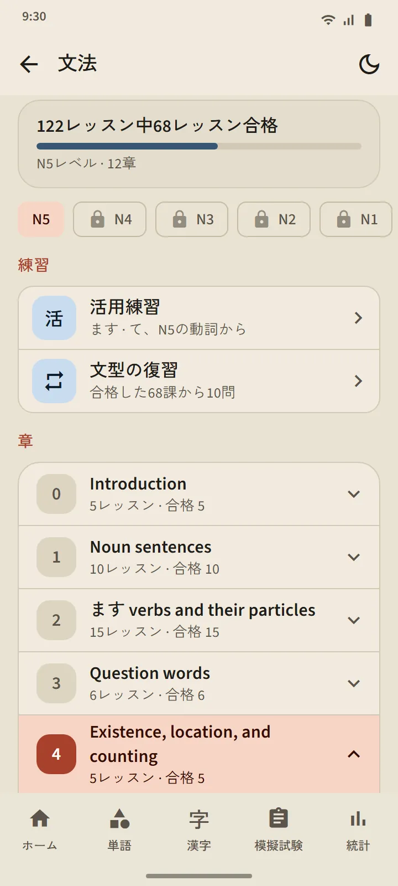
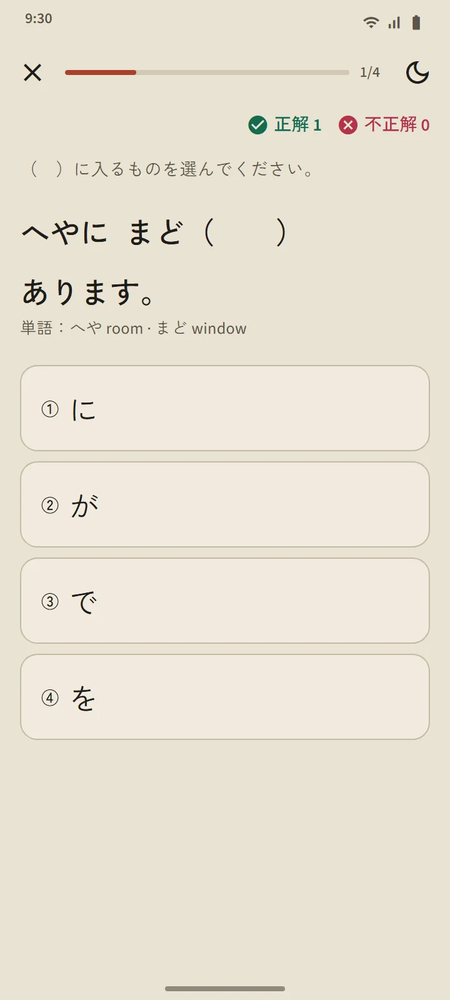
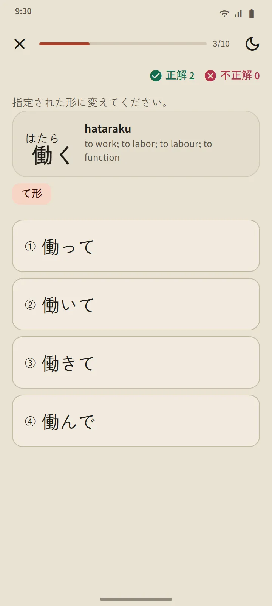
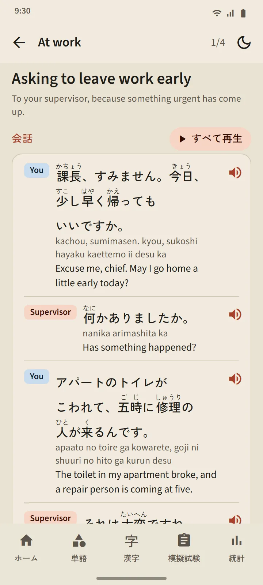

5 つのレベル、268 のレッスン
文法のページは、ホーム画面の「日本語の基礎」コーナーから開きます。上のチップで N5、N4、N3、N2、N1 を切り替え、章はその場で開き、各レッスンには未読、読んだ、練習合格の印がつきます。N5 は N5 の模擬試験に出るすべての文型を、N3〜N1 はそれぞれのレベルの模擬試験で問われる文型をカバーしています。
| レベル | レッスン | 利用 |
|---|---|---|
| N5 | 122 | 無料 |
| N4 | 56 | プレミアム |
| N3 | 25 | プレミアム |
| N2 | 26 | プレミアム |
| N1 | 39 | プレミアム |

レッスンの構成
どのレッスンも同じ構成です：文型とその意味、作り方（公式と例語）、解説、聞けるふりがなつきの例文、似た文型のためのまちがえやすい文型。日本語の文は文節の区切りでしか改行しないので、小さいスマホでも読みやすくなっています。
解説つきの練習
レッスンのいちばん下のボタンで、3〜5 問の練習が始まります。答えごとに解説がつき、まちがいが 1 問以内ならそのレッスンは合格です。合格しなかったレッスンはやり直せます。結果は文法のページと統計タブに記録されます。

活用練習と文型の復習
文法のページの練習コーナーには、2 つの練習があります。活用練習では、N5 の動詞を ます形、て形、ない形、辞書形、た形に変えます。それぞれの形は対応するレッスンに合格すると開き、答えごとにルールを説明します。文型の復習では、合格したレッスンから最大 10 問を、いちばん前に復習したものから出題します。模擬試験では、文法問題から「この文型を学ぶ」でそのレッスンに移れます。

表現と会話
13 の場面の短い会話 78：自己紹介、雑談、職場、店、飲食店、駅、病院と薬局、電話、役所、銀行と郵便局、住まいと近所づきあい、緊急時、空港。どの会話にも、ふりがな・ローマ字・意味つきのせりふ、話し手ごとに違う声で読み上げる「すべて再生」ボタン、大切な表現、短い練習があります。最初の 12 の会話は無料です。

あなたの言語で
解説、例文の意味、選択肢、解説文は 14 言語で用意しています：英語、インドネシア語、ベトナム語、ミャンマー語、ネパール語、タイ語、シンハラ語、フィリピン語、ヒンディー語、ベンガル語、モンゴル語、クメール語、韓国語、中国語（繁体字）。日本語の文、公式、正解はどの言語でも同じです。日本語の表示言語では英語で表示されます。レッスンは TokuGo のために書き下ろしたあと見直しを行い、公開資料は照合にだけ使いました。